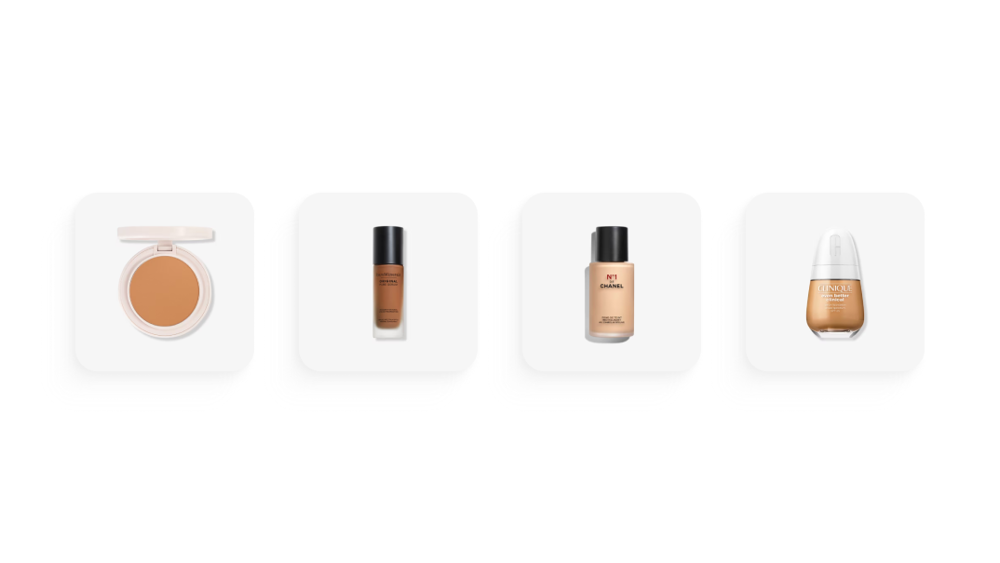
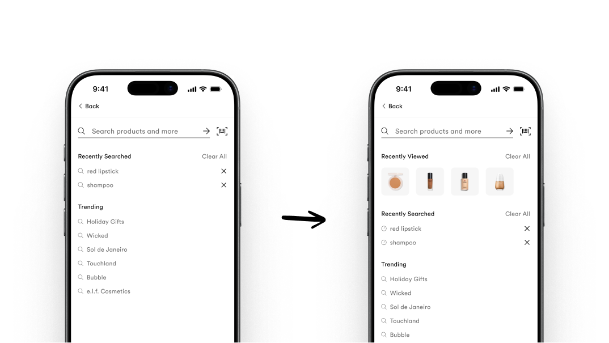
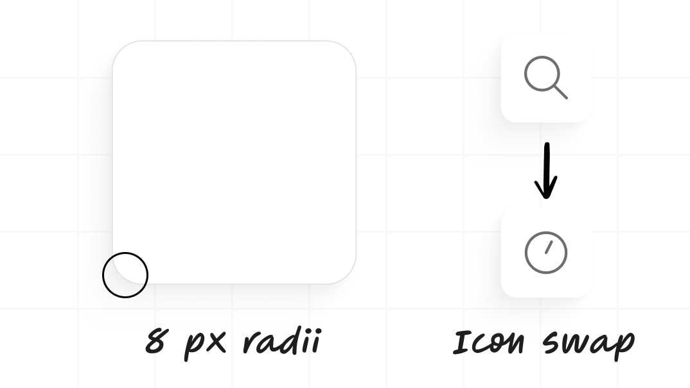
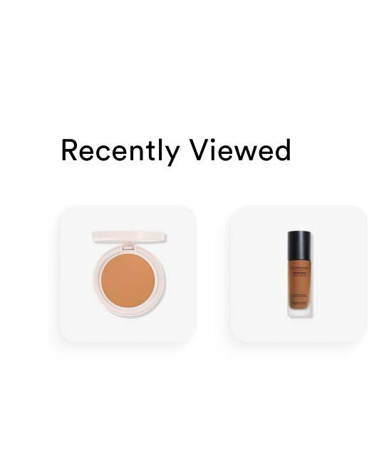
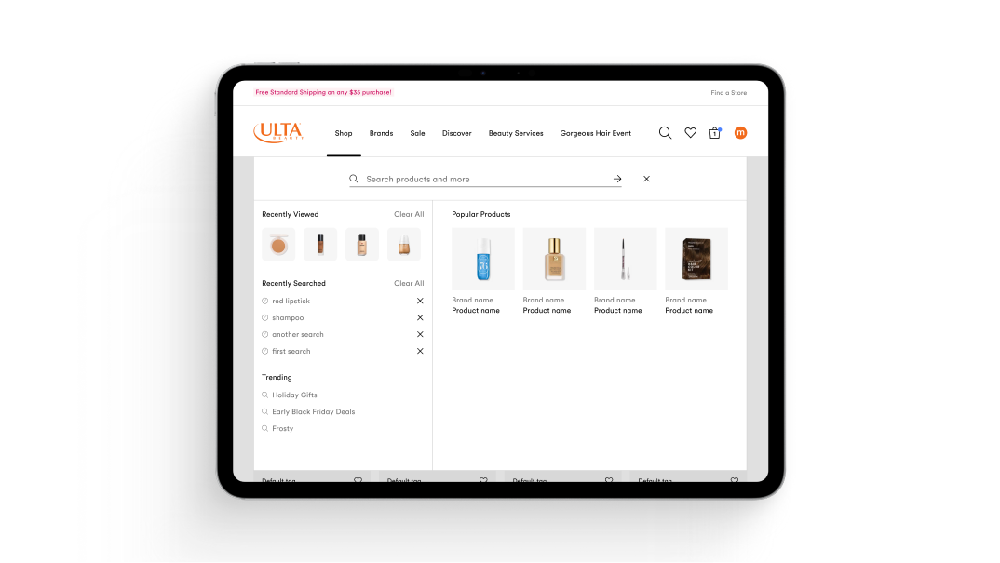

Recently Viewed Rail

Problem
Product volume and choice paralysis were hampering conversion at a time when the business was pushing for a more robust discovery experience.
Goal
Boost conversion and simplify choice within the search experience.
Context
As the team began laying the groundwork for a broader search overhaul, the recently viewed rail emerged as a clear quick win. We wanted to make use of an underperforming but valuable portion of the site's real estate (search dropdown). A discrete, shippable feature that could deliver impact while still flexible enough to evolve when the redesign arrived. Our approach leaned on the behavior of the shoppers 'self-priming.' By re-surfacing a product a user has already visited, we potentially add a burst of conversion early in the search journey.
Solution
Testing confirmed the best placement: at the top of search dropdown and directly below the input field.
Re-surfacing products users had already considered gave them a shortcut past choice paralysis and back toward conversion.
Design review rounds with the team led toward the form and feel of the component.


I settled on our 8px radii system style to pair with tiny image styles other teams were working on.
I also pushed to replace the search icon with the clock icon for the list items tied to search history to improve the association and user's recognition.

